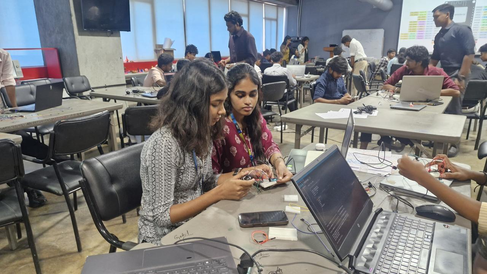
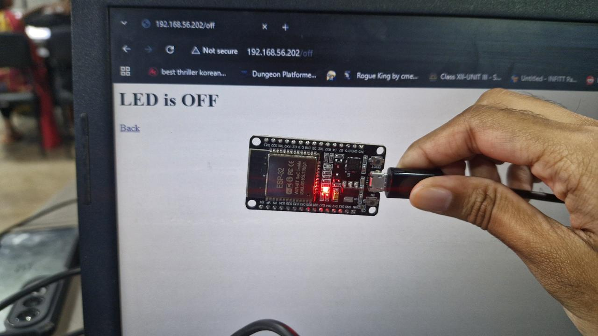
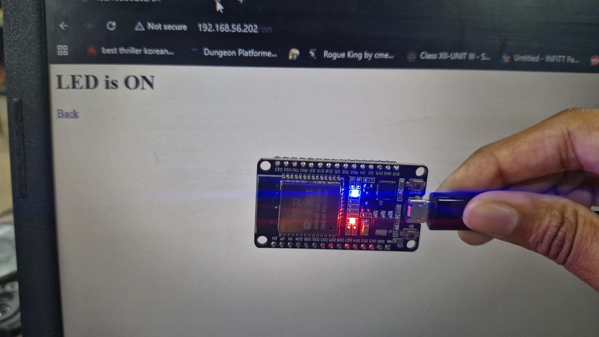

Task 01: Control the Inbuilt LED of ESP32 over Wi-Fi
Overview
This task turns an ESP32 into a small web server on the local Wi-Fi network. The ESP32 serves a web page with two buttons, ON and OFF. Clicking a button switches the inbuilt LED of the board. No cloud service is used. The ESP32 and the browser device only need to be connected to the same router.
Objective
- Connect the ESP32 to a Wi-Fi network.
- Run a web server on port 80 of the ESP32.
- Switch the inbuilt LED on and off from a browser by sending HTTP requests to the board.
Components
- ESP32 development board [[FILL: board name, e.g. NodeMCU ESP-WROOM-32]]
- Inbuilt LED on GPIO 2
- USB cable
- 2.4 GHz Wi-Fi network
- Arduino IDE with the ESP32 board package
Work
- Set up Arduino IDE with the ESP32 board package. Selected the ESP32 Dev Module board and the correct COM port.
- Wrote the sketch using the WiFi.h and WebServer.h libraries. GPIO 2 is set as an output because the inbuilt LED is connected to it.
- Entered the Wi-Fi name and password in the sketch and uploaded it to the board.
- Opened the Serial Monitor at 115200 baud. After connecting, the ESP32 prints its IP address: [[FILL: your IP address]].
- Typed that IP address into a browser on a device connected to the same Wi-Fi. The page with the ON and OFF buttons loaded.
- The server has three routes. "/" returns the page. "/on" sets GPIO 2 HIGH. "/off" sets GPIO 2 LOW. Each button click sends an HTTP GET request to its route, the ESP32 changes the pin and sends the page back showing the current LED state.
- Clicked ON and OFF several times and checked that the LED followed every click.
Media



Code
File: ESP32_LED_WebServer.ino
#include <WiFi.h>
#include <WebServer.h>
const char* ssid = "YOUR_WIFI_NAME";
const char* password = "YOUR_WIFI_PASSWORD";
const int ledPin = 2; // inbuilt LED
WebServer server(80);
String buildPage() {
String state = digitalRead(ledPin) ? "ON" : "OFF";
String page = "<!DOCTYPE html><html><head>";
page += "<meta name='viewport' content='width=device-width, initial-scale=1'>";
page += "<title>ESP32 LED Control</title></head>";
page += "<body style='text-align:center;font-family:sans-serif'>";
page += "<h1>ESP32 LED Control</h1>";
page += "<p>LED is " + state + "</p>";
page += "<p><a href='/on'><button>ON</button></a> ";
page += "<a href='/off'><button>OFF</button></a></p>";
page += "</body></html>";
return page;
}
void handleRoot() { server.send(200, "text/html", buildPage()); }
void handleOn() {
digitalWrite(ledPin, HIGH);
server.send(200, "text/html", buildPage());
}
void handleOff() {
digitalWrite(ledPin, LOW);
server.send(200, "text/html", buildPage());
}
void setup() {
Serial.begin(115200);
pinMode(ledPin, OUTPUT);
digitalWrite(ledPin, LOW);
WiFi.begin(ssid, password);
Serial.print("Connecting");
while (WiFi.status() != WL_CONNECTED) {
delay(500);
Serial.print(".");
}
Serial.println();
Serial.print("IP address: ");
Serial.println(WiFi.localIP());
server.on("/", handleRoot);
server.on("/on", handleOn);
server.on("/off", handleOff);
server.begin();
}
void loop() {
server.handleClient();
}Result
The ESP32 connected to Wi-Fi and hosted its own control page. The inbuilt LED switched on and off every time the ON and OFF buttons were clicked in the browser.
Learnings
- An ESP32 can host a web server on a local network without any cloud service.
- A browser request to a URL such as /on can be mapped to a function that changes a GPIO pin.
- The IP address is assigned by the router, so it is read from the Serial Monitor after every connection and can change.
- The inbuilt LED allows testing the Wi-Fi and web server logic before adding any external circuit.
- The ESP32 only supports 2.4 GHz Wi-Fi, so the network must be a 2.4 GHz one.